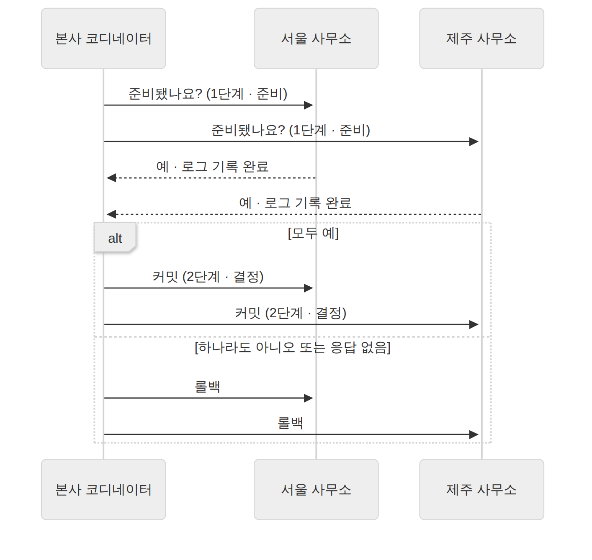

D055 · 길벗투어 예약 한 건의 일생 — E-R · 정규화 · SQL · 트랜잭션 · 분산 DB로 꿰는 한 주
B2 · B3 · B4 일요일이에요. 이번 주 D049~D054에서는 E-R 그림을 표로 옮기고, 잘못 모은 표를 정규화로 쪼개고, SQL을 보강하고, 트랜잭션을 깊게 보고, 마지막엔 데이터를 여러 사무소로 흩어 놓았어요. 한 주에 일곱 가지 큰 개념이 지나갔는데, 시험장에서 누가 “이건 D몇 번 내용”이라고 알려 주지는 않아요. 그래서 오늘은 지난주 길벗투어 DB를 이어받아, 예약 한 건이 DB 안에서 겪는 일생으로 한 번에 꿰어 봐요.
- E-R 관계를 릴레이션으로 옮기는 규칙과, 논리 설계 · 물리 설계에서 하는 일을 구별한다
- 함수 종속(완전 · 부분 · 이행)을 찾아 1NF~5NF 중 어디까지 만족하는지 판정하고, 무손실 분해를 설명한다
- 집계 함수의 NULL 규칙과 OLAP 다섯 연산, 뷰 · REVOKE CASCADE의 동작을 구별한다
- 2PL과 2PC, 고립화 수준별 이상 현상, 지연 · 즉시 갱신 회복, 분산 DB 투명성을 짝지어 말한다
1부 (약 19분)
2부 (약 25분)
0. 오늘의 사례와 지도
지난주 D048에서 만든 길벗투어 DB를 그대로 가져와요. 고객은 가온 · 나래 · 다솜 · 라온 네 명이고, 투어는 제주 · 부산 · 강릉 세 개예요. 나래는 세 투어를 모두 예약했고, 라온은 아직 아무것도 예약하지 않았어요. 오늘은 예약 표에 평점 열이 하나 늘었는데, 다녀와서 평점을 남긴 사람은 세 명뿐이라 나머지 세 칸은 NULL이에요.
| 예약번호 | 고객 | 투어 | 인원 | 평점 |
|---|---|---|---|---|
| 1 | 가온 | T1 제주 올레 3일 | 2 | 5 |
| 2 | 가온 | T2 부산 먹방 2일 | 1 | NULL |
| 3 | 나래 | T1 | 1 | 4 |
| 4 | 나래 | T2 | 3 | NULL |
| 5 | 나래 | T3 강릉 해변 2일 | 2 | 3 |
| 6 | 다솜 | T1 | 1 | NULL |
그리고 이 세 표를 정규화하기 전, 영업팀이 쓰던 엑셀 한 장짜리 장부도 함께 준비했어요. 고객 이름 · 등급과 투어명 · 요금이 예약마다 옆에 붙어 있는 6행짜리 표예요. 장면 2와 3은 이 장부에서 시작해요.
그림 1의 여섯 장면은 설계 순서와 같아요. 위 세 장면은 “어떤 표를 만들까”를 정하는 설계 이야기이고, 아래 세 장면은 만들어진 표를 쓰고 · 지키고 · 배치하는 이야기예요. 한 주 동안 이 순서를 뒤섞어 배웠다면 오늘 이 그림 한 장에 다시 꽂아 두면 돼요.
장면 1. 문장에서 표로 — 논리 설계 기출 10회
처음 영업팀이 한 말은 “고객이 투어를 예약하고, 예약마다 인원을 적어요”라는 문장이었어요. 지난주에 이 문장을 E-R 그림으로 바꿨고(개념 설계), 이번 주 D049에서는 그 그림을 표로 옮겼어요. 요구 문장은 손님이 말하고, E-R 그림은 기획자가 그리고, 릴레이션은 개발자가 만들어요. 같은 예약인데 이름표가 세 번 바뀌는 셈이에요.
데이터 모델 세 가지
데이터 모델은 데이터를 어떤 구조로 묶고 어떻게 연결할지 정하는 틀이에요. 논리 설계는 이 틀을 하나 고르는 데서 시작해요. 시험에 나오는 논리적 데이터 모델은 세 가지예요.
| 모델 | 구조 | 연결 방법 | 한계 |
|---|---|---|---|
| 계층형 | 트리(부모 1개) | 부모-자식 포인터, 1:N | 자식이 부모를 둘 가질 수 없어 M:N 표현이 어려움 |
| 네트워크형 | 그래프(부모 여럿) | 오너-멤버 집합(CODASYL), N:M | 포인터 길을 따라가야 해 구조 변경이 어려움 |
| 관계형 | 표(릴레이션) | 같은 키 값(외래키) | 조인 비용 — 대신 구조가 단순하고 독립적 |
계층형에서 예약은 투어 밑에 붙으면 고객 밑에는 붙을 수 없어요. 그래서 “나래의 예약 모두”를 찾으려면 모든 투어 가지를 뒤져야 해요. 네트워크형은 예약에 부모를 둘 줄 수 있어 이 문제를 풀었지만, 프로그램이 포인터를 따라가는 길을 알아야 해요. 관계형은 길을 없애고 값으로 연결했기 때문에, 구조를 몰라도 SQL 한 줄로 찾을 수 있어요.
E-R → 릴레이션 변환 규칙
관계 변환(관계 스키마 변환)은 E-R 그림의 개체 · 관계 · 속성을 정해진 규칙에 따라 릴레이션으로 바꾸는 일이에요. 개체는 각자 릴레이션 하나가 되고, 관계는 카디널리티에 따라 처리가 달라져요. 1:N이면 N쪽 표에 1쪽의 기본키를 외래키로 넣고, M:N이면 두 개체의 기본키를 묶은 교차 릴레이션을 새로 만들어요. 여러 값을 가지는 속성(다중값 속성)은 원래 표에 칸을 늘리지 않고 따로 떼어 낸 릴레이션으로 보내요.
길벗투어에서는 고객과 투어가 M:N이에요. 한 고객이 여러 투어를, 한 투어를 여러 고객이 예약하니까요. 그래서 관계 ‘예약’이 그대로 교차 릴레이션이 되고, 관계에 붙어 있던 속성 ‘인원’도 함께 따라가요. 만약 가이드 한 명이 여러 투어를 맡는 1:N 관계가 추가된다면 교차 표를 만들 필요 없이 투어 표에 가이드번호 한 칸만 더하면 돼요.
논리 설계의 일 vs 물리 설계의 일
논리 설계와 물리 설계는 이름이 비슷해서 시험이 자주 섞어요. 기준은 하나예요. 저장 장치를 생각하느냐예요. 논리 설계는 “어떤 표와 키가 있나”까지만 정하고, 물리 설계는 그 표를 디스크 위에 어떤 모양과 경로로 둘지 정해요.
| 단계 | 하는 일 | 결과물 |
|---|---|---|
| 논리 설계 | 목표 DBMS 모델에 맞춘 스키마 변환 · 정규화 · 트랜잭션 인터페이스 설계 · 스키마 평가와 정제 | 릴레이션 스키마 |
| 물리 설계 | 저장 레코드 양식 설계 · 레코드 집중(클러스터링) 분석 · 접근 경로(인덱스) 설계 | 저장 구조 · 인덱스 정의 |
→ 이 장면의 결과물: 릴레이션 스키마 세 장(고객 · 투어 · 예약). 그런데 영업팀은 이미 이 셋을 한 장에 몰아 적은 엑셀을 쓰고 있었어요. 다음 장면은 그 장부가 왜 위험한지 봐요.
장면 2. 한 장짜리 장부가 왜 위험한가 — 이상 현상과 함수 종속 기출 19회
영업팀 장부는 보기에는 편해요. 한 줄만 보면 누가 어느 투어를 몇 명으로 예약했고, 등급과 요금이 얼마인지 다 보이니까요. 문제는 고칠 때 생겨요. 장부 한 장에 모든 걸 적는 건 냉장고 한 칸에 모든 식재료를 쌓는 것과 같아요. 우유 하나 꺼내려다 옆의 계란을 건드려요.
이상 현상 세 가지 기출 12회
이상 현상(anomaly)은 정규화되지 않은 릴레이션에서 데이터 중복 때문에 삽입 · 삭제 · 갱신이 의도와 다르게 일어나는 문제예요. 길벗투어 장부의 기본키는 (고객번호, 투어번호)예요. 이 키 때문에 세 가지 사고가 생겨요.
| 이상 | 정의 | 장부에서 일어나는 일 |
|---|---|---|
| 삽입 이상 | 원하지 않는 값까지 함께 넣어야 삽입할 수 있음 | 예약이 없는 새 투어 T4나 고객 라온은 키 절반이 비어 넣을 수 없음 |
| 삭제 이상 | 한 행을 지우면 남겨야 할 정보까지 함께 사라짐 | 나래의 T3 예약을 취소하면 강릉 해변 투어 정보 자체가 없어짐 |
| 갱신 이상 | 같은 사실이 여러 곳에 있어 일부만 고치면 모순이 생김 | T1 요금을 올릴 때 세 줄 중 하나를 빠뜨리면 요금이 두 가지가 됨 |
함수 종속 — 결정자와 종속자
함수 종속(Functional Dependency)은 속성 X의 값 하나가 정해지면 속성 Y의 값이 언제나 하나로 정해지는 관계예요. X → Y로 쓰고 X를 결정자, Y를 종속자라고 불러요. 장부에서 고객번호 1을 고르면 이름은 언제나 가온이니 고객번호 → 이름이에요. 반대로 이름 → 고객번호는 동명이인이 생길 수 있어 보장되지 않아요. 함수 종속은 지금 데이터가 우연히 그런 게 아니라 업무 규칙으로 늘 성립해야 해요.
키가 여러 열로 된 표에서는 종속을 세 가지로 나눠요. 완전 함수 종속은 종속자가 기본키 전체에 종속되고 키의 일부만으로는 정해지지 않는 경우예요. 부분 함수 종속은 기본키의 일부만으로도 종속자가 정해지는 경우예요. 이행 함수 종속은 X → Y이고 Y → Z일 때 X → Z가 Y를 거쳐 성립하는 경우예요.
장부에서 인원은 “누가 · 어느 투어를”이 둘 다 있어야 정해지니 완전 종속이에요. 이름 · 등급은 고객번호만, 투어명 · 요금은 투어번호만 있으면 정해지니 부분 종속이에요. 이행 종속은 투어 표에 “담당 사무소”를 붙이면 보여요. 투어번호 → 지역이고 지역 → 담당 사무소이니, 투어번호 → 담당 사무소가 지역을 거쳐 생겨요.
암스트롱의 추론 규칙 기출 11회
암스트롱의 공리는 이미 아는 함수 종속에서 새 종속을 끌어내는 규칙 모음이에요. 기본 규칙 셋(반사 · 증가 · 이행)에서 나머지(결합 · 분해 · 의사 이행)를 유도할 수 있어요. 시험은 이 중 이행 규칙을 가장 자주 물어요. X → Y이고 Y → Z이면 X → Z예요. 그림 5 아래쪽의 점선 화살표가 바로 이 규칙이 만들어 낸 종속이에요.
| 규칙 | 내용 |
|---|---|
| 반사 | Y가 X의 부분집합이면 X → Y |
| 증가 | X → Y이면 XZ → YZ |
| 이행 | X → Y, Y → Z이면 X → Z |
| 결합(합집합) | X → Y, X → Z이면 X → YZ |
| 분해 | X → YZ이면 X → Y, X → Z |
| 의사 이행 | X → Y, WY → Z이면 WX → Z |
→ 이 장면의 결과물: 종속 화살표 지도(그림 5). 화살표의 꼬리가 키 전체가 아닌 곳이 문제의 원인이었어요. 다음 장면은 그 화살표를 따라 표를 쪼개요.
장면 3. 종속을 따라 쪼갠다 — 1NF부터 5NF까지 기출 16회
정규화(Normalization)는 중복을 줄이고 이상 현상을 막으려고 릴레이션을 더 작은 릴레이션들로 쪼개는 과정이에요. 목적은 데이터 구조의 안정성, 중복 최소화, 이상 현상 방지, 자료 삽입 시 구조 변경 최소화예요. 쪼갠다고 검색이 빨라지는 건 아니에요. 오히려 조인이 늘어 느려질 수 있어서, 그 대가를 되돌리는 반정규화가 따로 있어요(D059 예고).
| 정규형 | 조건 | 장부·사례에서 |
|---|---|---|
| 1NF | 모든 속성 값이 원자값(도메인이 원자적) | 한 칸에 “T1, T2”처럼 여러 투어를 적지 않음 — 장부는 이미 만족 |
| 2NF | 1NF + 부분 함수 종속 제거(모든 비키 속성이 키 전체에 완전 종속) | 고객 · 투어 표를 떼어 냄 |
| 3NF | 2NF + 이행 함수 종속 제거 | 지역 → 담당 사무소를 따로 뗌 |
| BCNF | 3NF + 모든 결정자가 후보키 | 배정 표의 가이드 → 언어를 뗌(그림 7) |
| 4NF | BCNF + 다치 종속 제거 | 가이드의 언어 목록과 자격증 목록을 따로 |
| 5NF | 4NF + 후보키를 통하지 않는 조인 종속 제거 | 세 조각 조인으로만 복원되는 관계를 셋으로 |
정규형은 손풀이 순서가 정해져 있어요. 먼저 기본키가 한 열인지 여러 열인지 봐요. 여러 열이면 키의 일부에만 매달린 속성이 있는지 찾고(2NF), 그다음 키가 아닌 속성끼리의 화살표를 찾아요(3NF). 진료 순서와 비슷해요. 접수(원자값)를 안 하면 진료실에 못 들어가고, 앞 진료를 마쳐야 다음 과로 갈 수 있어요.
| 고객 | 이름 | 등급 | 투어 | 투어명 | 요금 | 인원 |
|---|---|---|---|---|---|---|
| 1 | 가온 | 골드 | T1 | 제주 올레 | 450,000 | 2 |
| 1 | 가온 | 골드 | T2 | 부산 먹방 | 280,000 | 1 |
| 2 | 나래 | 골드 | T1 | 제주 올레 | 450,000 | 1 |
| 2 | 나래 | 골드 | T2 | 부산 먹방 | 280,000 | 3 |
| 2 | 나래 | 골드 | T3 | 강릉 해변 | 260,000 | 2 |
| 3 | 다솜 | 실버 | T1 | 제주 올레 | 450,000 | 1 |
① 출발점은 장부 6행이에요. 기본키는 (고객, 투어)이고, 모든 칸에 값이 하나씩이라 1NF는 이미 만족해요. 하지만 T1의 요금이 세 줄에, 나래의 등급이 세 줄에 반복돼요.
| 고객 | 이름 | 등급 |
|---|---|---|
| 1 | 가온 | 골드 |
| 2 | 나래 | 골드 |
| 3 | 다솜 | 실버 |
| 4 | 라온 | 실버 |
② 키의 절반(고객번호)만으로 정해지는 이름 · 등급을 떼어 고객 표를 만들어요. 부분 종속 하나가 사라졌고, 예약이 없는 라온도 이제 들어갈 자리가 생겼어요.
| 투어 | 투어명 | 요금 |
|---|---|---|
| T1 | 제주 올레 | 450,000 |
| T2 | 부산 먹방 | 280,000 |
| T3 | 강릉 해변 | 260,000 |
③ 나머지 절반(투어번호)만으로 정해지는 투어명 · 요금도 떼어 투어 표로 보내요. T1 요금은 이제 한 줄에만 적혀요. 여기까지 오면 부분 종속이 모두 없어져 2NF예요.
| 고객 | 투어 | 인원 |
|---|---|---|
| 1 | T1 | 2 |
| 1 | T2 | 1 |
| 2 | T1 | 1 |
| 2 | T2 | 3 |
| 2 | T3 | 2 |
| 3 | T1 | 1 |
④ 남은 예약 표에는 키 두 열과 키 전체가 있어야 정해지는 인원만 남아요. 키가 아닌 속성끼리의 화살표가 없으니 이행 종속도 없어 3NF, 결정자가 키뿐이라 BCNF까지 만족해요.
| 고객 | 이름 | 등급 | 투어 | 투어명 | 요금 | 인원 |
|---|---|---|---|---|---|---|
| 1 | 가온 | 골드 | T1 | 제주 올레 | 450,000 | 2 |
| 1 | 가온 | 골드 | T2 | 부산 먹방 | 280,000 | 1 |
| 2 | 나래 | 골드 | T1 | 제주 올레 | 450,000 | 1 |
| 2 | 나래 | 골드 | T2 | 부산 먹방 | 280,000 | 3 |
| 2 | 나래 | 골드 | T3 | 강릉 해변 | 260,000 | 2 |
| 3 | 다솜 | 실버 | T1 | 제주 올레 | 450,000 | 1 |
⑤ 세 표를 고객번호 · 투어번호로 다시 조인하면 원래 장부 6행이 한 줄도 늘거나 줄지 않고 돌아와요. 이걸 무손실 분해라고 하고, 아래 실행 상자 ①로 직접 확인할 수 있어요.
3NF와 BCNF — 결정자가 후보키인가 기출 15회
BCNF(보이스-코드 정규형)는 릴레이션의 모든 결정자가 후보키인 상태예요. 3NF는 “키가 아닌 속성”이 키가 아닌 것에 매달리는 것만 막아서, 키의 일부인 속성이 다른 것에 매달리는 경우는 통과시켜요. BCNF는 그 빈틈까지 막아요. 길벗투어가 외국인 손님용 가이드 배정 표를 만들었다고 해 봐요. 가이드 한 명은 한 언어만 맡고, 손님 한 명은 언어마다 가이드 한 명을 배정받아요.
배정 표의 키는 (고객, 언어)이고, 가이드 → 언어가 따로 성립해요. 언어는 키의 일부라서 3NF 검사에는 걸리지 않지만, 가이드는 결정자인데 후보키가 아니라 BCNF 위반이에요. 그 결과 “민호는 영어”라는 사실이 두 줄에 반복돼요. 가이드-언어 표를 떼어 내면 이 반복이 사라져요.
4NF와 5NF — 독립된 목록과 세 조각 복원
다치 종속(MVD)은 A 값 하나에 B 값 여러 개가 묶이고, 그 묶음이 다른 속성 C와 서로 독립인 관계예요(A →→ B). 가이드 민호가 언어 두 개(영어 · 중국어)와 자격증 두 개(응급처치 · 운전)를 가졌는데 한 표에 담으면, 둘이 아무 관계가 없는데도 2 × 2 = 4줄의 모든 조합을 적어야 해요. 4NF는 이런 다치 종속을 없애 가이드-언어, 가이드-자격증 두 표로 나눈 상태예요.
조인 종속(JD)은 릴레이션을 세 개 이상으로 투영한 뒤 다시 조인해야만 원래대로 복원되는 관계예요. 가이드 · 투어 · 언어가 “가이드가 그 투어를 맡고, 그 투어가 그 언어를 지원하고, 가이드가 그 언어를 하면 반드시 배정한다”는 규칙으로 묶여 있으면, 두 조각으로는 안 되고 세 조각(가이드-투어, 투어-언어, 가이드-언어)이어야 무손실이에요. 5NF(PJ/NF)는 후보키를 통하지 않는 이런 조인 종속을 없앤 상태예요. 정규형은 5NF까지가 시험 범위이고, “6NF”가 선지에 정규화 단계로 나오면 의심하세요.
무손실 분해 — 다시 붙였을 때 원래대로인가
무손실 분해는 쪼갠 릴레이션들을 자연 조인했을 때 원래 릴레이션과 정확히 같은 튜플이 나오는 분해예요. 조건은 두 조각의 공통 속성이 적어도 한쪽의 키여야 한다는 것이에요. 이 조건을 어기면 조인 결과에 원래 없던 가짜 튜플이 섞여요. 정보가 늘어난 것 같지만 무엇이 진짜인지 알 수 없게 되니 사실은 정보를 잃은 거예요.
상자 ①은 0이 나와요. 세 표를 다시 붙인 결과에서 장부를 빼도 남는 행이 없다는 뜻이에요. 상자 ②는 11이 나와요. 원래 6행에 없던 5행이 생겼어요. 예를 들어 “가온이 T1을 1명으로 예약”이라는 줄이 나오는데, 실제로 가온은 2명으로 예약했어요.
→ 이 장면의 결과물: 고객 · 투어 · 예약 세 표(3NF, BCNF), 그리고 다시 붙여도 6행인 무손실 분해. 표가 정해졌으니 다음 장면은 SQL로 이 표들을 다뤄요.
장면 4. 고치고 · 보여 주고 · 거두고 · 요약한다 — SQL 보강 기출 20회
여행이 끝난 손님에게 평점을 받기로 했어요. 예약 표에 칸이 하나 필요해요. 제주 사무소 직원에게는 제주 예약만 보여 주고 싶고, 그만둔 팀장의 권한도 거둬야 해요. 마지막으로 사장님은 “투어별 · 지역별로 몇 명이 갔는지” 숫자 하나를 원해요. D052에서 다룬 SQL 네 묶음이 이 네 요청에 하나씩 대응해요.
ALTER · DROP — 구조 고치기 기출 16회
ALTER TABLE은 이미 있는 테이블의 구조를 바꾸는 DDL이에요. ALTER TABLE 예약 ADD 평점 INT;는 열을 추가하고, 열 정의를 바꿀 때는 DBMS에 따라 MODIFY나 ALTER COLUMN을 써요. 열이나 제약 조건을 없앨 때는 DROP을 써요. 테이블 자체를 지우는 DROP TABLE은 CASCADE를 붙이면 그 테이블을 참조하는 뷰 · 제약까지 함께 지우고, RESTRICT를 붙이면 참조하는 것이 있을 때 삭제를 거부해요.
뷰 — 저장하지 않는 표 기출 14회
뷰(View)는 하나 이상의 기본 테이블에서 유도한, 이름 붙은 가상 테이블이에요. CREATE VIEW 제주예약 AS SELECT … WHERE 투어번호 = 'T1';처럼 정의만 저장하고, 조회할 때마다 기본 테이블에서 계산해요. 덕분에 제주 직원에게 필요한 행만 보여 주는 보안 장치가 되고, 복잡한 조인을 이름 하나로 감출 수 있어요. 대신 뷰에는 독자적인 인덱스를 둘 수 없고, 집계나 조인이 들어간 뷰는 삽입 · 갱신 · 삭제가 제한돼요. 뷰 정의는 ALTER로 바꿀 수 없어 지우고 다시 만들어요.
DROP VIEW 제주예약 CASCADE;는 그 뷰를 기반으로 만든 다른 뷰까지 함께 지워요. 이때 기본 테이블의 행은 그대로예요. 뷰는 창문일 뿐이라 창문을 떼어 낸다고 방 안의 가구가 사라지지 않아요.
REVOKE … CASCADE — 연쇄 회수
GRANT는 권한을 주고 REVOKE는 거두는 DCL이에요. WITH GRANT OPTION을 붙여 받은 사용자는 그 권한을 남에게 다시 줄 수 있어요. 영업팀장이 이렇게 받은 조회 권한을 인턴에게 나눠 줬다면, REVOKE SELECT ON 예약 FROM 영업팀장 CASCADE;는 팀장의 권한과 함께 팀장이 나눠 준 인턴의 권한까지 연쇄로 거둬요. CASCADE 없이(RESTRICT) 거두려 하면, 다시 나눠 준 권한이 남아 있어 거부될 수 있어요.
집계 함수 일곱 가지와 NULL 기출 20회
집계 함수는 여러 행의 값을 하나의 요약 값으로 줄이는 함수예요. 시험 범위는 COUNT · SUM · AVG · MAX · MIN · STDDEV(표준편차) · VARIANCE(분산) 일곱 가지예요. 핵심 규칙은 하나예요. 집계 함수는 NULL을 빼고 계산하고, COUNT(*)만 NULL이 든 행도 센다. 평점에 답하지 않은 사람을 0점으로 치지 않는 것과 같아요. 답을 안 한 사람이 많을수록 평균은 답한 사람들끼리의 평균이 돼요.
상자 ③은 전체 6 · 평점있음 3 · 합 10 · 평균 1.67 · 최대 3 · 최소 1 · 표준편차 0.82 · 분산 0.67이 나와요. 표준편차는 분산의 제곱근이에요(PostgreSQL의 STDDEV · VARIANCE는 표본 기준이에요). 상자 ④는 평균 4.00이에요. 평점 합 12를 NULL이 아닌 3행으로 나눴기 때문이고, 6으로 나눈 2가 아니에요.
OLAP 다섯 연산
OLAP(온라인 분석 처리)은 쌓인 데이터를 여러 차원으로 묶어 대화하듯 분석하는 방식이에요. 지역 · 월 · 투어를 축으로 한 큐브를 떠올리면 다섯 연산이 손에 잡혀요. 롤업은 투어 → 지역 → 전체처럼 위 단계로 요약해 올라가고, 드릴다운은 반대로 세부로 내려가요. 슬라이스는 한 차원을 값 하나로 고정해 면을 잘라 보고, 다이스는 여러 차원에 범위를 걸어 작은 큐브를 떼어 봐요. 피벗은 행과 열의 축을 바꿔 다른 각도에서 봐요.
상자 ⑤는 7행이 나와요. 투어마다 한 줄(강릉 2 · 부산 4 · 제주 4), 지역마다 소계 한 줄씩, 그리고 맨 끝에 지역 · 투어명이 모두 NULL인 전체 합 10이에요. SQL의 ROLLUP이 OLAP의 롤업을 한 줄로 해 주는 셈이에요.
→ 이 장면의 결과물: 평점 열이 생긴 예약 표, 제주 예약 뷰, 정리된 권한, 투어 · 지역별 요약. 그런데 성수기 첫날, 마지막 한 자리에 두 사람이 동시에 들어와요. 다음 장면은 트랜잭션이에요.
장면 5. 두 사람이 동시에 마지막 자리를 잡는다 — 트랜잭션 기출 15회
제주 올레 투어에 자리가 딱 하나 남았어요. 가온과 다솜이 같은 순간 예약 버튼을 눌렀어요. 둘 다 “남은 자리 1”을 읽고 둘 다 예약에 성공하면 자리가 −1이 돼요. D053에서 본 장치들은 모두 이 장면을 막으려고 있어요.
병행 제어의 목적과 로킹 단위 기출 14회
병행 제어(Concurrency Control)는 여러 트랜잭션이 동시에 실행될 때 DB의 일관성을 지키도록 실행 순서를 조정하는 기법이에요. 목적은 네 가지로 정리돼요. DB 공유를 최대화하고, 시스템 활용도를 최대화하고, 일관성을 유지하고, 사용자 응답 시간을 최소화하는 것이에요. 대표 기법은 로킹 · 타임스탬프 순서 · 낙관적 검증 · 다중 버전이에요.
로킹(Locking)은 데이터를 쓰기 전에 락을 걸어 다른 트랜잭션이 함께 바꾸지 못하게 하는 기법이에요. 락을 거는 크기를 로킹 단위라고 해요. 단위가 작을수록(행 하나) 락의 수는 많아져 관리 부담이 커지지만, 서로 덜 막아서 병행성은 높아져요. 단위가 클수록(테이블 전체) 락은 적고 단순하지만 병행성은 낮아져요.
| 로킹 단위 | 락 수 | 관리 오버헤드 | 병행성 |
|---|---|---|---|
| 작게(행) | 많음 | 큼 | 높음 |
| 크게(테이블 · DB) | 적음 | 작음 | 낮음 |
2PL과 2PC — 이름은 닮았지만 다른 문제
2단계 로킹 규약(2PL)은 한 트랜잭션이 락을 얻는 확장 단계와 락을 푸는 축소 단계를 나눠, 한 번 풀기 시작하면 새 락을 얻지 못하게 하는 규칙이에요. 이렇게 하면 동시에 돌아도 어떤 순서로 하나씩 돈 것과 같은 결과(직렬 가능성)가 보장돼요. 다만 서로의 락을 기다리는 교착 상태는 막지 못해요.
2단계 커밋(2PC)은 여러 사이트에 걸친 분산 트랜잭션을 모든 사이트가 함께 커밋하거나 함께 롤백하게 만드는 프로토콜이에요. 코디네이터가 참여자들에게 준비를 묻는 준비(투표) 단계와, 모두 “예”일 때만 커밋을 알리는 커밋(결정) 단계로 나뉘어요. 조별 과제 제출 직전 단톡방과 같아요. “다 됐어?” 하고 묻고, 전원이 “응” 해야 제출을 누르고, 한 명이라도 “아직”이면 모두 되돌려요.

| 누가 | 하는 일 | 상태 |
|---|---|---|
| 본사 | “준비됐나요?” 를 두 사무소에 보냄 | 1단계 시작 |
| 서울 · 제주 | 변경 내용을 로그에 기록 | 대기 |
① 나래가 T2 예약을 T1으로 옮겨요. 서울 사무소에서는 T2 자리를 풀고, 제주 사무소에서는 T1 자리를 잡아야 해요. 본사(코디네이터)가 먼저 둘에게 준비를 물어요.
| 누가 | 하는 일 | 상태 |
|---|---|---|
| 서울 | “예” — 언제든 커밋 가능 | 준비 완료 |
| 제주 | “예” — 언제든 커밋 가능 | 준비 완료 |
② 두 사무소가 각자 로그를 디스크에 써 두고 “예”라고 답해요. 이렇게 답한 뒤에는 혼자 마음대로 취소할 수 없어요. 여기까지가 준비(투표) 단계예요.
| 누가 | 하는 일 | 상태 |
|---|---|---|
| 본사 | 모두 “예” → 커밋 명령 | 2단계 |
| 서울 · 제주 | 실제로 커밋, 락 해제 | 완료 |
③ 전원이 “예”라서 본사가 커밋을 알려요. 한 곳이라도 “아니오”였거나 답이 없었다면 둘 다 롤백했을 거예요. 이것이 커밋(결정) 단계예요.
| 누가 | 하는 일 | 상태 |
|---|---|---|
| 제주 | 2단계 도중 정전 | 준비 완료로 멈춤 |
| 제주(재시작) | 로그 확인 → 본사에 결정 물어 커밋 | 완료 |
④ 만약 제주 서버가 커밋 명령을 받기 직전에 꺼졌다면? 재시작 후 로그에서 “준비 완료” 기록을 보고 본사에 결정을 물어 마저 커밋해요. 일부 사이트가 고장 나도 트랜잭션의 원자성이 지켜지는 이 성질이 장애 투명성과 이어져요.
| 2PL (2단계 로킹) | 2PC (2단계 커밋) | |
|---|---|---|
| 푸는 문제 | 한 DB 안의 동시 실행 순서 | 여러 사이트의 커밋 일치 |
| 두 단계 | 확장 · 축소 | 준비(투표) · 커밋(결정) |
| 보장 | 직렬 가능성 | 분산 원자성 |
| 못 막는 것 | 교착 상태 | 코디네이터 장애 시 대기(블로킹) |
고립화 수준과 이상 현상 기출 15회
고립화 수준(Isolation Level)은 한 트랜잭션이 다른 트랜잭션의 변경을 어디까지 볼 수 있게 할지 정한 단계예요. 완벽히 고립시키면 안전하지만 모두가 줄을 서서 느려지니, 표준 SQL은 네 단계를 두고 고르게 해요. 단계마다 허용되는 이상 현상이 달라요. 더티 리드는 커밋되지 않은 값을 읽는 것, 반복 불가능 읽기는 같은 행을 두 번 읽었는데 그 사이 커밋으로 값이 바뀐 것, 팬텀은 같은 조건으로 다시 찾았더니 없던 행이 나타난 것이에요.
| 시점 | 트랜잭션 A (가온) | 트랜잭션 B (다솜) |
|---|---|---|
| 1 | 좌석 1 → 0 으로 변경(아직 커밋 전) | |
| 2 | 좌석 읽음 → 0 “매진” | |
| 3 | 롤백 → 다시 1 |
① 더티 리드. B가 A의 커밋되지 않은 값 0을 읽고 손님을 돌려보냈는데, A가 롤백해서 자리는 사실 남아 있었어요. READ UNCOMMITTED에서만 생겨요.
| 시점 | 트랜잭션 A (가온) | 트랜잭션 B (다솜) |
|---|---|---|
| 1 | 좌석 읽음 → 1 | |
| 2 | 좌석 1 → 0, 커밋 | |
| 3 | 같은 좌석 다시 읽음 → 0 |
② 반복 불가능 읽기. B가 한 트랜잭션 안에서 같은 행을 두 번 읽었는데, 사이에 A가 커밋해서 값이 달라졌어요. READ COMMITTED까지는 생겨요.
| 시점 | 트랜잭션 A (가온) | 트랜잭션 B (다솜) |
|---|---|---|
| 1 | T1 예약 수 셈 → 3건 | |
| 2 | T1 예약 1건 새로 INSERT, 커밋 | |
| 3 | 같은 조건으로 다시 셈 → 4건 |
③ 팬텀. 이번엔 기존 행 값이 아니라 조건에 맞는 행이 새로 나타났어요. REPEATABLE READ는 읽은 행을 지키지만 새 행까지는 표준상 막지 못해요.
| 수준 | 더티 리드 | 반복 불가능 | 팬텀 |
|---|---|---|---|
| READ UNCOMMITTED | 생김 | 생김 | 생김 |
| READ COMMITTED | 막음 | 생김 | 생김 |
| REPEATABLE READ | 막음 | 막음 | 생김 |
| SERIALIZABLE | 막음 | 막음 | 막음 |
④ 수준을 한 계단 올릴 때마다 위 세 장면이 하나씩 막혀요. 대신 더 많이 기다리게 해서 동시에 처리하는 양이 줄어요. 이 브라우저 실습 DB(PGlite)는 연결이 하나뿐이라 이 장면은 직접 돌려 볼 수 없어 시뮬레이션으로 보여 드렸어요.
회복 — 지연 갱신과 즉시 갱신
회복(Recovery)은 장애로 깨진 DB를 로그를 이용해 장애 직전의 일관된 상태로 되돌리는 일이에요. 도구는 두 가지예요. REDO는 커밋된 변경을 로그를 보고 다시 반영하는 것이고, UNDO는 커밋되지 않은 변경을 로그를 보고 취소하는 것이에요. 어떤 도구가 필요한지는 “커밋 전에 DB를 건드렸느냐”로 정해져요.
지연 갱신(Deferred Update)은 트랜잭션이 커밋될 때까지 변경을 로그에만 적고 DB에는 반영하지 않는 기법이에요. 커밋 전에 장애가 나면 DB에 남은 흔적이 없으니 UNDO가 필요 없고, 커밋 후 반영이 덜 된 것만 REDO해요. 즉시 갱신(Immediate Update)은 변경을 바로 DB에 쓰고 로그도 남기는 기법이에요. 커밋 전에 장애가 나면 이미 쓴 것을 UNDO해야 하고, 커밋된 것은 REDO해요. 로그 전체를 처음부터 훑지 않게 중간중간 표시해 두는 것이 검사점(Checkpoint)이에요.
→ 이 장면의 결과물: 마지막 자리는 먼저 락을 얻은 가온에게 가고, 다솜은 기다렸다가 “매진”을 정확히 봐요. 장애가 나도 로그로 되돌릴 수 있어요. 이제 길벗투어가 커져 사무소가 늘어나요. 마지막 장면은 데이터를 흩어 놓는 이야기예요.
장면 6. 서울 · 부산 · 제주 사무소로 퍼진다 — 물리 설계와 분산 DB 기출 15회
물리적 설계는 논리 설계로 만든 스키마를 목표 DBMS와 저장 장치에 맞는 물리 구조로 바꾸는 단계예요. 장면 1의 표에서 본 세 가지 일(저장 레코드 양식 · 레코드 집중 · 접근 경로)을 하고, 응답 시간 · 저장 공간 효율 · 트랜잭션 처리량을 고려해요. 저장 장치를 서버에 붙이는 방식도 이때 정해요. 서버에 직접 붙이면 DAS, LAN 위 파일 서버로 공유하면 NAS, 전용 고속 망으로 여러 서버와 여러 저장 장치를 이으면 SAN이에요(디스크를 묶는 RAID는 D054 장면 2).
분산 데이터베이스의 구조 기출 12회
분산 데이터베이스는 논리적으로는 하나의 DB이지만 물리적으로는 네트워크로 연결된 여러 사이트에 나뉘어 저장된 DB예요. 구성 요소는 각 사이트의 분산 처리기 · 분산 데이터베이스 · 통신 네트워크예요. 사용자가 보는 모습과 실제 배치 사이에 네 계층의 스키마가 있어요. 전역 스키마는 분산되지 않은 것처럼 전체를 정의하고, 분할 스키마는 어떻게 쪼갰는지, 할당 스키마는 조각을 어느 사이트에 뒀는지, 지역 스키마는 각 사이트 DBMS가 실제로 가진 표를 정의해요.
예약 표를 쪼개는 일을 단편화(Fragmentation)라고 해요. 수평 단편화는 행을 조건으로 나눠요. 제주 투어 T1 예약 3행은 제주 사무소에, 나머지 3행은 서울에 두는 식이에요. 수직 단편화는 열을 나눠요. 예약번호 · 고객번호 · 투어번호는 영업용으로, 예약번호 · 인원 · 평점은 운영용으로 나누고, 다시 붙일 수 있게 키(예약번호)를 양쪽에 남겨요. 어느 쪽이든 빠짐없고(완전성), 다시 합쳐지고(재구성), 겹치지 않아야(분리) 해요.
상자 ⑥은 3 · 3 · 0이에요. 합치면 6행이고 겹침이 없으니 완전성 · 분리가 성립해요. 상자 ⑦은 6이에요. 키를 양쪽에 남겨 둔 덕분에 수직 조각이 원래대로 붙어요. 장면 3의 무손실 분해와 같은 원리예요.
분산 투명성 다섯 가지 기출 12회
투명성(Transparency)은 데이터가 여러 곳에 흩어져 있다는 사실을 사용자가 의식하지 않고 하나의 DB처럼 쓰게 하는 성질이에요. 사무소가 셋으로 나뉘어도 손님은 한 줄만 물어봐요. 택배가 어느 물류 창고를 거쳐 왔는지 받는 사람이 몰라도 되는 것과 같아요. 무엇을 숨기느냐에 따라 다섯 가지로 나눠요.
| 투명성 | 숨기는 것 | 이어지는 기법 |
|---|---|---|
| 위치 투명성 | 데이터가 어느 사이트에 있는지 | 할당 스키마 · 전역 이름 |
| 분할 투명성 | 하나의 표가 여러 조각으로 나뉘었는지 | 분할 스키마 |
| 복제 투명성 | 같은 데이터의 사본이 여러 곳에 있는지 | 사본 동기화 |
| 병행 투명성 | 여러 사용자가 동시에 실행하는지 | 로킹 · 타임스탬프(장면 5) |
| 장애 투명성 | 일부 사이트 · 통신 장애가 났는지 | 2PC로 원자성 유지(장면 5) |
분산 DB의 장점은 지역 자치성, 신뢰성과 가용성 향상, 점진적 확장, 효율성과 융통성이에요. 대가는 설계와 소프트웨어 개발이 어렵고 비용이 들며, 처리 비용과 오류 가능성이 늘어난다는 점이에요. 그래서 “분산 DB는 설계가 쉽고 개발 비용이 적다”는 늘 틀린 설명이에요. 다음 주에는 이 물리 설계의 나머지 — 파티셔닝 · 클러스터링(D056), 접근 제어(D057), 이중화 · 백업(D058), 반정규화(D059)가 이어져요.
→ 이 장면의 결과물: 예약 표는 제주 · 서울 사무소로 흩어졌지만, 손님과 직원은 여전히 표 하나처럼 써요. 예약 한 건의 일생이 문장에서 시작해 여러 사무소의 디스크까지 내려왔어요.
헷갈리는 짝 — 가르는 질문
표는 요약이에요. 이유를 떠올릴 수 없는 칸이 있다면 해당 장면으로 돌아가 보세요.
| 헷갈리는 짝 (이번 주) | 가르는 질문 | 기억할 것 |
|---|---|---|
| 논리 vs 물리 설계 | 저장 장치를 생각하나? | 논리: 스키마 변환 · 정규화 · 평가 / 물리: 레코드 양식 · 집중 · 접근 경로 |
| 계층형 vs 네트워크형 vs 관계형 | 부모가 몇이고 무엇으로 잇나? | 1개 트리 / 여럿 그래프 / 키 값 |
| 1:N vs M:N 변환 | 교차 릴레이션이 필요한가? | 1:N은 N쪽 외래키 / M:N은 교차 릴레이션 |
| 삽입 · 삭제 · 갱신 이상 | 넣을 때 · 지울 때 · 고칠 때 중 언제? | 원치 않는 값 필요 / 함께 사라짐 / 일부만 고쳐 모순 |
| 완전 vs 부분 vs 이행 종속 | 키 전체 · 키 일부 · 비키를 거쳐? | 완전 / 부분(2NF로 제거) / 이행(3NF로 제거) |
| 3NF vs BCNF | 결정자가 모두 후보키인가? | 아니면 BCNF 위반(3NF는 통과 가능) |
| 4NF vs 5NF | 독립 목록인가, 세 조각 복원인가? | 다치 종속(4NF) / 조인 종속(5NF) |
| 무손실 vs 손실 분해 | 공통 속성이 한쪽의 키인가? | 키면 무손실 / 아니면 가짜 튜플 |
| COUNT(*) vs COUNT(열) | NULL 행을 세나? | COUNT(*)만 셈 · 나머지 집계는 NULL 제외 |
| 롤업 vs 드릴다운 | 요약으로 올라가나, 세부로 내려가나? | 롤업 / 드릴다운 |
| 슬라이스 vs 다이스 vs 피벗 | 한 차원 고정 · 여러 범위 · 축 회전? | 슬라이스 / 다이스 / 피벗 |
| DROP VIEW CASCADE | 기본 테이블 행도 지우나? | 아니요 — 의존 뷰만 함께 삭제 |
| REVOKE CASCADE | 다시 나눠 준 권한은? | 연쇄 회수 |
| 2PL vs 2PC | 락 규칙인가, 커밋 약속인가? | 확장 · 축소 / 준비 · 커밋 |
| 고립화 4단계 | 어떤 현상까지 막나? | RU 셋 다 / RC 더티만 막음 / RR 팬텀만 남음 / S 모두 막음 |
| 지연 vs 즉시 갱신 | 커밋 전에 DB를 건드렸나? | 지연: REDO만 / 즉시: REDO · UNDO |
| DAS vs NAS vs SAN | 서버와 디스크 사이에 무엇이? | 직접 / LAN 파일 서버 / 전용 망 |
| 투명성 5종 | 무엇을 숨기나? | 위치 · 분할 · 복제 · 병행 · 장애 (Media Access는 가짜) |
| 헷갈리는 짝 (누적) | 가르는 질문 | 기억할 것 |
|---|---|---|
| DFD 4요소 vs 자료 사전 | DFD 그림 위에 그리는 기호인가? | 프로세스 · 자료 흐름 · 자료 저장소 · 단말 / 자료 사전은 별도 문서 |
| 생성 vs 구조 vs 행위 패턴 | 만들기 · 짜 맞추기 · 주고받기 중? | 생성: Abstract Factory · Builder · Factory Method · Prototype · Singleton |
| COCOMO 유기형 vs 반분리형 vs 내장형 | 작고 익숙한가, 제약 많은 대형인가? | 유기형(50KDSI 이하) / 반분리형(300KDSI 이하) / 내장형(300KDSI 이상) |
| 경계값 분석 vs 동치 분할 | 구간 가장자리인가, 대표값인가? | 경계값: 경계와 바로 바깥 / 동치: 구간마다 하나 |
| V-모델 짝 | 개발 단계마다 짝이 되는 테스트는? | 요구사항 ↔ 인수 · 시스템 설계 ↔ 시스템 · 설계 ↔ 통합 · 모듈 ↔ 단위 |
| 중앙 vs 분산 형상 관리 | 전체 이력을 로컬에 복제하나? | CVS · SVN 중앙 / Git 분산 |
| 정보공학 vs 구조적 vs CBD | 데이터 중심 · 처리 중심 · 부품 재사용? | 정보공학 / 구조적 / CBD |
| 럼바우 3모델 | 무엇을 그리나? | 객체(클래스 관계) · 동적(상태 · 사건) · 기능(DFD) |
| 이진 vs 순차 탐색 | 정렬돼 있어야 하나? | 이진: 정렬 필수, 중간값과 비교 / 순차: 처음부터 |
| WHERE vs HAVING | 그룹을 만들기 전인가, 후인가? | WHERE 행 조건 / HAVING 그룹 조건 |
오늘의 지도 한 장
| 장면 | 카드 | 하는 일 | 시험 함정 한 줄 |
|---|---|---|---|
| 1 | D049 | E-R → 릴레이션, 데이터 모델 고르기 | 레코드 집중 분석은 논리가 아니라 물리 |
| 2 | D050 | 이상 현상 · 함수 종속 찾기 | 이상 3종에 가짜 이름 · 결정자 방향 뒤집기 |
| 3 | D050 · D051 | 1NF~5NF로 무손실 분해 | 도부이결다조 한 칸 밀기 · BCNF = 결정자가 후보키 |
| 4 | D052 | ALTER · 뷰 · REVOKE · 집계 · OLAP | NULL은 집계에서 제외 · 뷰 삭제는 기본 테이블 무관 |
| 5 | D053 | 병행 제어 · 2PL · 2PC · 고립화 · 회복 | 확장 · 축소는 2PL · 지연 갱신은 UNDO 없음 |
| 6 | D054 | 물리 설계 · 분산 DB · 단편화 · 투명성 | Media Access는 가짜 · 분산 DB는 설계가 어렵다 |
참고: 이번 주 D049~D054에서 교차 확인한 자료(PostgreSQL 문서의 트랜잭션 고립화 · 뷰 · 권한, Database normalization · Armstrong’s axioms · Distributed database 위키 문서)와 수제비 2027 기본서의 해당 범위를 다시 대조해 내 말로 정리했어요. 실행 상자 결과는 브라우저 안 PostgreSQL(PGlite) 기준이에요.
확인 문제
1~10번은 이번 주 범위(D049~D054), 11~13번은 지난 오답 재확인, 14~20번은 지난 범위 누적이에요. 본문을 다시 보지 말고 풀어 보세요.
- 길벗투어가 가이드 관리 기능을 추가하면서 E-R 다이어그램에 가이드 개체와 투어 개체를 ‘담당’ 관계로 이었다. 가이드 한 명은 여러 투어를 맡고, 한 투어의 담당 가이드는 한 명이다. 이 관계를 릴레이션으로 옮기는 방법으로 가장 알맞은 것은?
- 릴레이션 상세(고객번호, 투어번호, 고객명, 인원)의 기본키는 (고객번호, 투어번호)이고, ‘고객번호 → 고객명’과 ‘(고객번호, 투어번호) → 인원’이 성립한다. 모든 속성 값은 원자값이다. 이 릴레이션이 만족하는 가장 높은 정규형은?
- 정규형과 그 단계에서 제거하는 대상의 짝으로 옳은 것은?
- 회원(회원번호, 등급, 할인율)의 기본키는 회원번호 하나이고, ‘회원번호 → 등급’과 ‘등급 → 할인율’이 성립한다. 이 릴레이션에 대한 설명으로 옳은 것은?
- 고객센터 상담 표의 점수 열에 90, NULL, 70, NULL 네 값이 들어 있다.
SELECT COUNT(*), COUNT(점수), AVG(점수) FROM 상담;의 결과는? - 지역 × 월 × 상품 축으로 만든 매출 큐브에서 ‘지역 = 제주’인 한 면만 잘라 보는 OLAP 연산은?
- 분산 트랜잭션에서 사용하는 2단계 커밋 프로토콜(2PC)의 두 단계로 옳은 것은?
- 표준 SQL의 고립화 수준 중 READ COMMITTED에서도 여전히 일어날 수 있는 현상으로 옳은 것은?
- 지연 갱신(Deferred Update) 회복 기법에 대한 설명으로 옳은 것은?
- 여러 지점의 사용자가 같은 계좌를 동시에 갱신해도 결과가 일관되도록 로킹이나 타임스탬프로 구현하며, 사용자는 동시 실행 여부를 의식하지 않아도 되는 분산 데이터베이스의 투명성은?
- 배달 앱의 자료 흐름도(DFD)에서 시스템 바깥에 있으면서 주문 자료를 보내고 결과를 받는 ‘고객’처럼, 자료의 출발점이나 도착점이 되는 구성 요소는?
- GoF 디자인 패턴 중 생성 패턴으로만 묶인 것은?
- 개발자 다섯 명 안팎의 팀이 이미 익숙한 환경에서 50KDSI 이하의 사내 업무 시스템을 만든다. COCOMO 개발 유형으로 가장 알맞은 것은?
- V-모델에서 요구사항 분석 단계와 짝을 이루어, 사용자가 직접 요구를 충족하는지 확인하는 테스트 레벨은?
- 회원 가입 화면의 나이 입력란은 1부터 100까지만 허용한다. 경계값 분석으로 고른 입력값으로 가장 알맞은 것은?
- 개발자마다 저장소의 전체 이력을 자기 컴퓨터에 복제해 두고, 네트워크에 연결되지 않아도 로컬에서 커밋할 수 있는 분산형 버전 관리 도구는?
- 기업 전체의 정보 요구를 계획 단계부터 다루고, 데이터 모델링을 중심에 두어 분석 · 설계 · 구축으로 이어 가는 전사적 개발 방법론은?
- 럼바우의 객체지향 분석 기법에서 시간에 따라 객체의 상태가 바뀌고 사건이 일어나는 흐름을 상태 다이어그램으로 나타내는 모델링은?
- 오름차순으로 정렬된 배열 [3, 8, 15, 21, 34, 47, 59, 72]에서 이진 탐색으로 47을 찾는다. 중간 위치는 (처음 + 끝) ÷ 2의 소수점 이하를 버려 정할 때, 값을 비교하는 횟수는?
- 판매(상품, 수량) 표에 (A, 5) (A, 2) (B, 1) (C, 4) (C, 3) (B, 2) 6행이 있다.
SELECT 상품 FROM 판매 GROUP BY 상품 HAVING SUM(수량) >= 5;의 결과 행 수는?
고른 뒤 답안 복사 → 디스코드 공부 채널에 붙여넣기 하면 돼요.
답장: 정처기 D055: 1)번호 2)번호 3)번호 4)번호 5)번호 6)번호 7)번호 8)번호 9)번호 10)번호 11)번호 12)번호 13)번호 14)번호 15)번호 16)번호 17)번호 18)번호 19)번호 20)번호
| 고객번호 | 이름 | 등급 |
|---|---|---|
| 1 | 가온 | 골드 |
| 2 | 나래 | 골드 |
| 3 | 다솜 | 실버 |
| 4 | 라온 | 실버 |
| 투어번호 | 투어명 | 지역 | 요금 |
|---|---|---|---|
| T1 | 제주 올레 3일 | 제주 | 450000 |
| T2 | 부산 먹방 2일 | 부산 | 280000 |
| T3 | 강릉 해변 2일 | 강릉 | 260000 |
| 예약번호 | 고객번호 | 투어번호 | 인원 | 평점 |
|---|---|---|---|---|
| 1 | 1 | T1 | 2 | 5 |
| 2 | 1 | T2 | 1 | NULL |
| 3 | 2 | T1 | 1 | 4 |
| 4 | 2 | T2 | 3 | NULL |
| 5 | 2 | T3 | 2 | 3 |
| 6 | 3 | T1 | 1 | NULL |
| 고객번호 | 이름 | 등급 | 투어번호 | 투어명 | 요금 | 인원 |
|---|---|---|---|---|---|---|
| 1 | 가온 | 골드 | T1 | 제주 올레 3일 | 450000 | 2 |
| 1 | 가온 | 골드 | T2 | 부산 먹방 2일 | 280000 | 1 |
| 2 | 나래 | 골드 | T1 | 제주 올레 3일 | 450000 | 1 |
| 2 | 나래 | 골드 | T2 | 부산 먹방 2일 | 280000 | 3 |
| 2 | 나래 | 골드 | T3 | 강릉 해변 2일 | 260000 | 2 |
| 3 | 다솜 | 실버 | T1 | 제주 올레 3일 | 450000 | 1 |